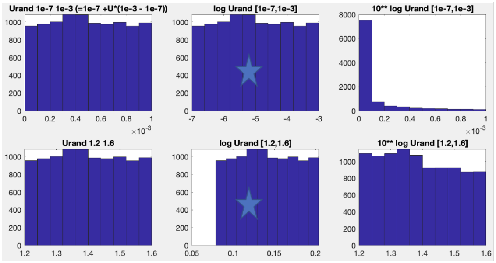

CARDAMOM C developer guide
Intro tips.
Before doing any of the following, start a new branch and used it as your developing branch to avoid potential conflicts. Constantly pull from the main branch (or any branch that your branch is based on) to keep your branch updated.
Regularly & frequently compile (e.g. CARDAMOM_COMPILE) when making any changes.
If you’re comfortable with your changes and want to contribute your changes to the main branch (or any branch that you want to merge to), start a merge request and notify members of the team.
Make a new model.
Making a new model ID in CARDAMOM (e.g. ID=830), based on original model (e.g. ID=811). To do this:
Open C/projects/CARDAMOM_GENERAL/CARDAMOM_MODEL_LIBRARY.c and create new model identification information (e.g. ID = 830).
make folder in projects/CARDAMOM_MODELS/DALEC/DALEC_830 (if copied, open all files in folder and rename all instances of e.g. ”811” to “830”).
Tips for step 2.
copy every instance of DALEC_811 and name them DALEC_830.
Compile C code to check if it compiles.
(Matlab) You can use “CARDAMOM_COMPILE” in matlab, to see if the code compiles OK.
if the above works without issue, then you should be able to change a CBF.ID value to CBF.ID=830 and the model will run (e.g. with CARDAMOM_RUN_MODEL) without issue!
Once you’ve successfully replicated CBF.ID=811 to CBF.ID=830, you can then make model structure changes in DALEC_830.c
Keep using “CARDAMOM_COMPILE” every so often (in matlab, and equivalent function elsewhere) to see if your new code compiles OK.
For matlab users
Open CARDAMOM_RUN_MODEL.m and add the new model ID to the appropriate “if” statement (e.g. if CBF.ID==1000 || CBF.ID==1001;).
(shall this be deleted? since for matlab users we are only extracting CBR.PARS, CBR.FLUXES and CBR.POOLS) From CARDAMOM_RUN_MODEL.m we get a CBR structure, we are only extracting CBR.PARS, CBR.FLUXES and CBR.POOLS for subsequent analysis. There’s an updated, easy way to figure out output variable names, for your model ID:
eg. if your model ID is 1100
MD=CARDAMOM_MODEL_LIBRARY(1100,[],1);
MD extracts parameters, fluxes, and pools names in the same order they were defined in your DALEC model source code. To calculate subsequent fluxes of interest, eg., NBE:
mod.NBE = -CBR.FLUXES(:,:,MD.FLUX_IDs.gpp)+CBR.FLUXES(:,:,MD.FLUX_IDs.resp_auto)+CBR.FLUXES(:,:,MD.FLUX_IDs.rh_co2);
MD.FLUX_IDs.gpp points to a numeric number that points to the exact dimension in the CBR.FLUXES, which is the modeled gpp.
Add more parameters to the model.
update this section with instructions for parameter index abstraction
In the folder titled C/projects/CARDAMOM_MODELS/DALEC/DALEC_
, open MODEL_INFO_ .c, and change “DALECmodel.nopars” (e.g. from “33” to “35”) Open PARS_INFO_
.c and add two extra entries at the bottom of the code (with minimum and maximum values). Note: CARDAMOM only supports positive-definite values, if a -ve to +ve range is required, use “exp()” function for -ve to +ve value ranges, and use “log()” to transform these back within DALEC_ .c model. For matlab users. Run this line in the matlab command window after making any changes to the number of parameters or pools in MODEL_INFO_
.c
MD=CARDAMOM_MODEL_LIBRARY(<newmodelid>,[],1);
(where
Add more pools to the model
In the folder titled C/projects/CARDAMOM_MODELS/DALEC/DALEC_
, open MODEL_INFO_ .c, and change “DALECmodel.nopools” (e.g. from “8” to “9”) To optimize the pool initial conditions along with other parameters, add an extra parameter to the model. Follow instructions in “Add more parameters to the model” section to do this.
FOR MATLAB USERS. Run this line in the matlab command window after making any changes to the number of parameters or pools in MODEL_INFO_
.c:
“MD=CARDAMOM_MODEL_LIBRARY(
(where
Adapt EDC2_
.c to either (a) run EDC checks on new pools or
(b) limit EDC checks to previously existing pools only (check for instances where “nopools” variable is used in loops). This is (unfortunately) a less-than-elegant approach, and we’re working on a comprehensive solution in the long run.
Define prior range for parameters and why log transformed prior range is used
Avoid using zero as either the minimum or maximum parameter values, as log transformation is used for creating the new parameter values so that there is equal chance being selected within the same magnitude. Log transformation is essential for parameters spanning several magnitudes, like Soil Organic Carbon turnover rate, while doesn’t make a big difference for parameters like Q10;
Guidelines on comments and naming conventions
I think we would do well to have a lot more comments in our code describing what the variables are. Maybe some “rule of thumb” that every new variable definition requires a comment that explains exactly what it is?
Of course, if those comments are incorrect, then they will be more hurtful than helpful, so it is important that any subsequent changes to the code are accounted for in the comments. For example, at one point, AUTO_RESP_MAINTENANCE did contain the total maintenance respiration flux from all pools, and then subsequently changed to exclude foliar. So if we had defined AUTO_RESP_MAINTENANCE with a comment, that comment would have needed to be updated. Forgetting to update the comment would then leave us more vulnerable than we’d have been with no comment to begin with.
I suppose another thing that would help is to be careful with variable names, especially when we change a variable as we did with AUTO_RESP_MAINTENANCE. Maybe another rule of thumb would be that we MUST rename a variable when redefining what it means? That way, some other person who may be unaware of the change won’t falsely think they know what a variable is based on knowing it’s previous definition.
Two examples make it easier to understand:
Soil organic C turnover rate (1e-7 to 1e-3 gC yr-1)
Temperature sensitivity (Q10, 1.2 to 1.6)
For soil organic c turnover rate, we want equal possibilities for values spanning 1e-7 to 1e-6, 1e-6 to 1e-5,1e-5 to 1e-4, and 1e-4 to 1e-3, instead of equal chances for values spanning 10e-7 to 0.11e-3, 0.11e-3 to 0.21e-3, 0.21e-3 to 0.31e-3, … 0.91e-3 to 1* 1e-3.
Left figures are showing the uniform space distributions; Middle figures are showing the log uniform space distributions, which is used in CARDAMOM MCMC; Right figures are showing the actual uniform space distributions in order to get the middle distribution;

Add a new dataset to CARDAMOM DATA structure
Example: NBE uncertainty, CH4, etc.
Files that are Modified:
CARDAMOM read/writer Matlab/ Python (e.g. add to list of obsnames in “CBFOBS=compile_cbf_obs_fields(CBF)”)
CARDAMOM_WRITE_BINARY_FILEFORMAT.m; CARDAMOM_READ_BINARY_FILEFORMAT.m
CARDAMOM_DATA_STRUCTURE.c
CARDAMOM_READ_BINARY_DATA.c
To add changes, can simply search for term ‘CH4’ to find all the spots you need to add your new term
Add observation variable name to CARDAMOM_DATA_STRUCTURE.c (e.g. follow “GPP” entry as example)
Add number of indices and number of none zero obs (again, follow GPP example throughout code)
Add to CARDAMOM_READ_BINARY_DATA.c
Initialize data structure, top of file
~L:150; initialize field: e.g. if (DATA->NEEunc==0){DATA->NEEunc=calloc(DATA->nodays,sizeof(double));}
~L:210; add line by line reading of observations
Located in the binary file by the order of observations
~L:266; if (DATA->noobs>11){c=0;for (n=0;n
nodays;n++){if (DATA->NEEunc[n]>-9998){DATA->neeuncpts[c]=n;c=c+1;}}} Free the point of the structure ~L:350
~L:360, free the structure (avoid segmentation fault)
Add to CARDAMOM_WRITE_BINARY_FILEFORMAT.m
Data is available in the data structure for use in Likelihood etc.
Optional: add new cost function module (e.g. DATA_LIKELIHOOD_CH4.c) to use
To do this, add cost function module call in CARDAMOM/C/projects/DALEC_CODE/MODEL_LIKELIHOOD_FUNCTIONS/DALEC_ALL_LIKELIHOOD.c
If observation field can only be used by subset of models (e.g. DATA.CH4 can only be used by DATA.ID==1010), then add “IF” statement to only run “DATA_LIKELIHOOD_CH4.c” if DATA.ID==1010.
Refer to section ‘Make a new cost function’ to add your new stream to cost function
Make a new cost function (soon to be obsolete)
1: Create or copy existing DALEC like function (e.g. copy GPP_LIKELIHOOD.c) * E.g. cp DALEC_LIKELIHOOD_GPP.c DALEC_LIKELIHOOD_NEE.c
2: Add ~L:10 include new cost function module in the overhead of the master file (DALEC_ALL_LIKELIHOOD.c). A call new module in code * E.g. #include “DALEC_LIKELIHOOD_NEE.c” * P=P+DALEC_LIKELIHOOD_NEE(D);
3: Write new cost function (e.g. in DALEC_LIKELIHOOD_NEE.c) * Switches for EDCs * Switches CBF.OTHERPRIORS (Anthony provide more detail)